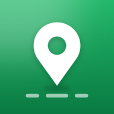

Ritlog · TootlePrivacybeleid
Laatst bijgewerkt: 23 november 2026
Ritlog is een app om ritten met een (lease)auto bij te houden. We verzamelen zo min mogelijk gegevens, verkopen niets en tonen geen advertenties.
Wat we opslaan
- Je ritten en instellingen (datum, adressen, kilometers, km-stand, je auto). Deze staan op je telefoon.
- Als je inlogt met Apple of Google: je naam en e-mailadres (zoals Apple of Google die doorgeven) en een account-ID, plus een kopie van je ritten en instellingen, zodat ze op al je apparaten hetzelfde zijn. Inloggen is niet verplicht.
Waar het naartoe gaat
- Supabase (servers in de EU, Frankfurt) bewaart je account en de kopie van je ritten. Alleen jij kunt je eigen gegevens zien.
- Jouw eigen Google Sheet, als je die koppelt. Ritten gaan rechtstreeks naar jouw Sheet; wij kunnen die niet inzien.
- PDOK (Nederlandse overheid) om adressen op te zoeken, en OSRM om afstanden te berekenen. Daarvoor worden alleen de adressen of coördinaten van de rit verstuurd, zonder je naam of account.
- Apple / Google regelen het inloggen.
Wat we niet doen
Geen tracking, geen analytics, geen advertenties, geen verkoop of delen van gegevens met anderen.
Je rechten
Je kunt je account en alle opgeslagen gegevens zelf verwijderen in de app: Instellingen → Account → Account verwijderen. Je kunt ook een back-up downloaden (Instellingen → Gegevens). Vragen? Neem contact op.
Privacy policy
Last updated: 23 November 2026
Tootle is an app to log trips with a (company) car. We collect as little data as possible, sell nothing and show no ads.
What we store
- Your rides and settings (date, addresses, kilometres, odometer, your car). These are kept on your phone.
- If you sign in with Apple or Google: your name and email address (as shared by Apple or Google) and an account ID, plus a copy of your rides and settings so they stay the same on all your devices. Signing in is optional.
Where it goes
- Supabase (EU servers, Frankfurt) stores your account and the copy of your rides. Only you can access your own data.
- Your own Google Sheet, if you connect one. Rides go directly to your Sheet; we cannot see it.
- PDOK (Dutch government) to look up addresses, and OSRM to calculate distances. Only the addresses or coordinates of a ride are sent, never your name or account.
- Apple / Google handle signing in.
What we don't do
No tracking, no analytics, no ads, no selling or sharing of data.
Your rights
You can delete your account and all stored data yourself in the app: Settings → Account → Delete account. You can also download a backup (Settings → Data). Questions? Get in touch.